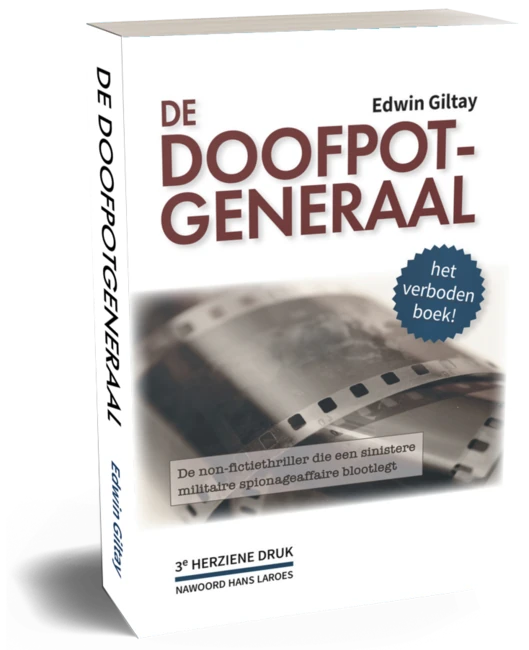

Bewijsstuk · Registratie
“Het gerechtshof Den Haag heeft een eind vorig jaar opgelegd verspreidingsverbod van het boek ‘De doofpotgeneraal’ vernietigd. Het boek, dat handelt over het beruchte fotorolletje uit Sebrenica, zou een oud-medewerkster van de Militaire Inlichtingendienst (MID) in haar goede naam aantasten.” De volledige tekst van de melding, onder de kop. De monitor spelt ‘Sebrenica’ zonder r.
Hiermee staat het boekverbod in het persvrijheidsoverzicht van de Nederlandse journalistiek zelf. De Persvrijheidsmonitor houdt de ontwikkelingen rond de persvrijheid in Nederland bij en komt tot stand met steun van de stichting Persvrijheidsfonds, die de Nederlandse Vereniging van Journalisten en het Genootschap van Hoofdredacteuren in 2007 oprichtten. De melding van 12 april 2016 vat het arrest samen: het gerechtshof Den Haag vernietigde het verspreidingsverbod dat eind 2015 was opgelegd omdat het boek een oud-medewerkster van de Militaire Inlichtingendienst in haar goede naam zou aantasten. Waar Mapping Media Freedom het verbod als internationale schending registreerde, legt deze monitor de afloop in eigen land vast.

Deze pagina is een bewijsstuk bij het boek De doofpotgeneraal van Edwin Giltay en de bijbehorende website.